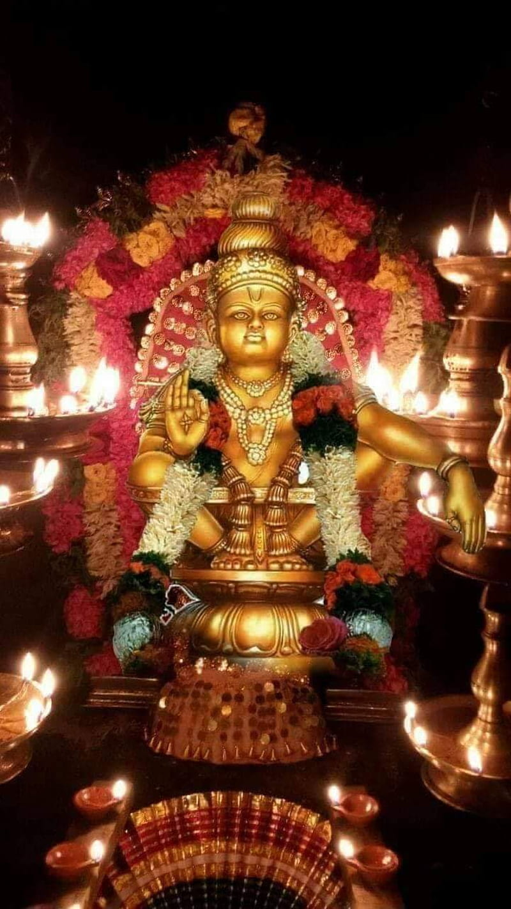
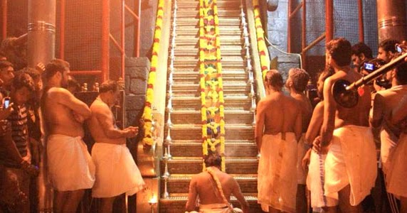
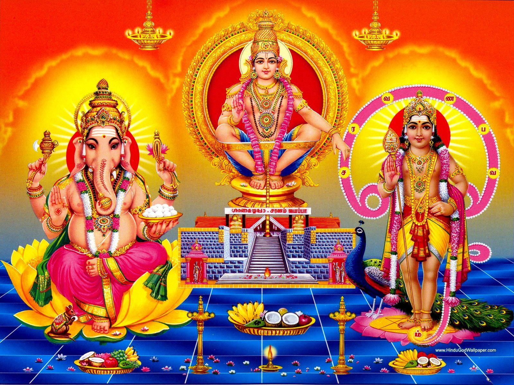
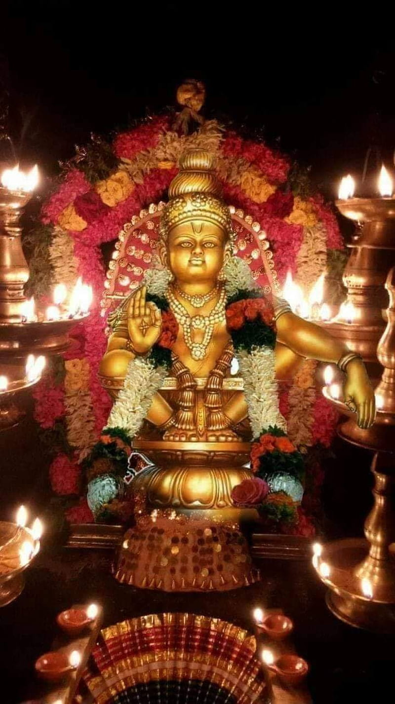
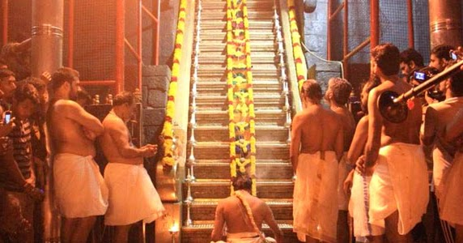
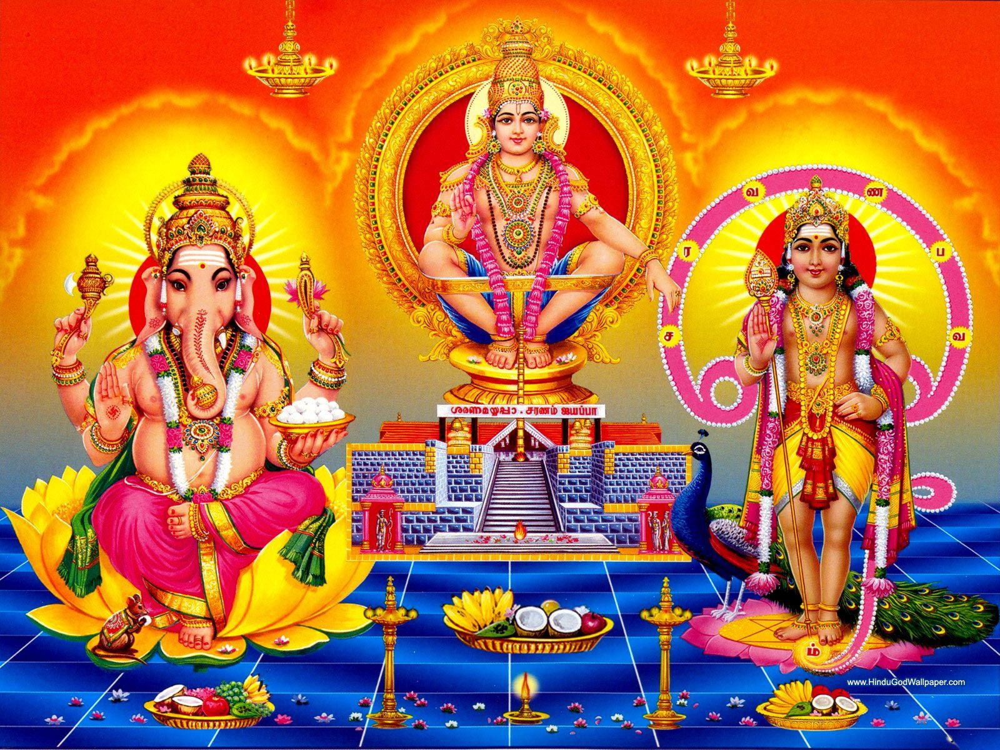
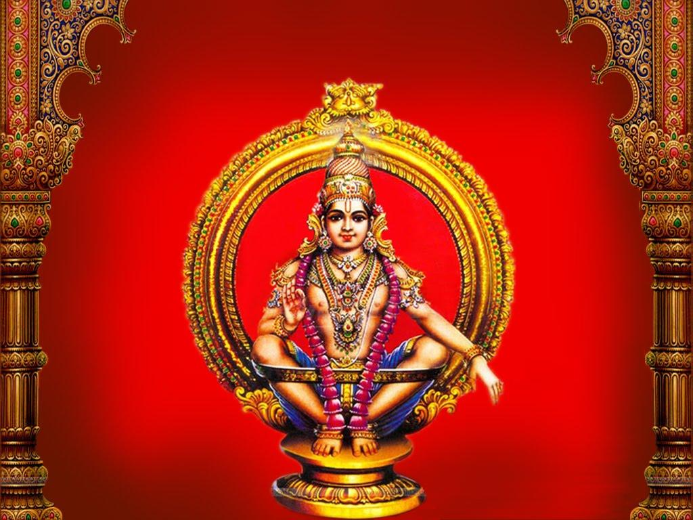
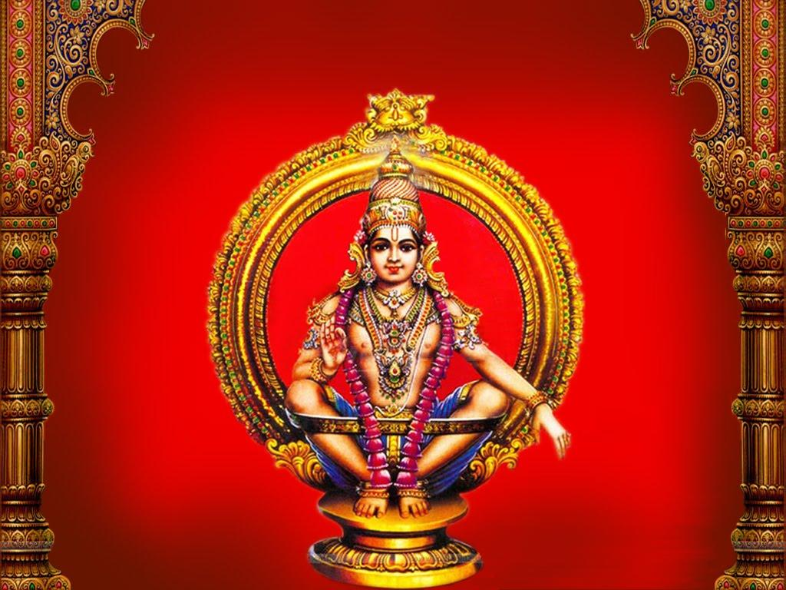

Live Darshan

Welcome to the sacred abode of Lord Ayyappa, the divine symbol of Dharma, purity, and devotion. The Ayyappa Swamy Temple stands as a sanctuary for all devotees seeking inner peace, divine blessings, and the strength to follow a righteous life.
As the sacred chant “Swamiye Saranam Ayyappa” echoes through the air, the temple becomes a space of tranquility and surrender. Every corner reflects the spiritual energy of faith and the message of Lord Ayyappa — to live with discipline, humility, and equality.
Built in the traditional Kerala architectural style, the temple features beautifully carved pillars, a golden dhwajasthambam (flagpole), and a serene idol of Lord Ayyappa in yogic posture symbolizing balance, meditation, and peace. Shrines of Lord Ganapathi, Goddess Malikapurathamma, and Nagaraja grace the premises, offering devotees the blessings of the entire Ayyappa tradition.
The Ayyappa Swamy Temple was founded with the divine inspiration to create a local center for Lord Ayyappa’s worship, following the sacred customs of Sabarimala. Lord Ayyappa — son of Lord Shiva and Mohini — represents the union of strength and compassion, a reminder that all paths lead to the same truth.
Established by devoted followers, the temple has grown into a beacon of spirituality and harmony, upholding ancient values of devotion and equality through rituals, community service, and cultural activities.
The temple follows traditional Ayyappa Vratham rituals, encouraging devotees to observe 41 days of austerity, celibacy, and meditation before darshan — symbolizing the soul’s journey toward enlightenment. Major events such as Mandala Pooja, Makara Jyothi, and Padi Pooja are performed with grandeur, devotion, and adherence to Vedic traditions.
6:00 AM
5:30 PM
8:00 PM
 





 

Vizag Steel Plant,Visakhapatnam City, India
Mon - Sun • 05:00 AM - 08:00 PM
Phone: +91 98xxxxxx00
Email: info@ayyappatemple.com